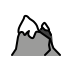

Activity
Sections
Miles walked
Routes
Click a route to see its details and pace along the way.

Records
Google My Maps
Your routes as KML, ready for Google My Maps or Google Earth.
Walk log
Click a row to show it on the map. Click a column heading to sort.